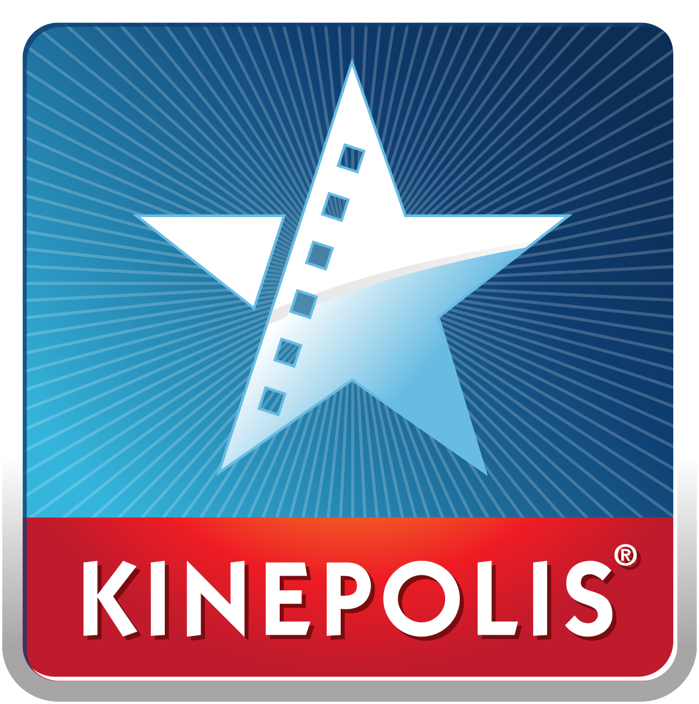
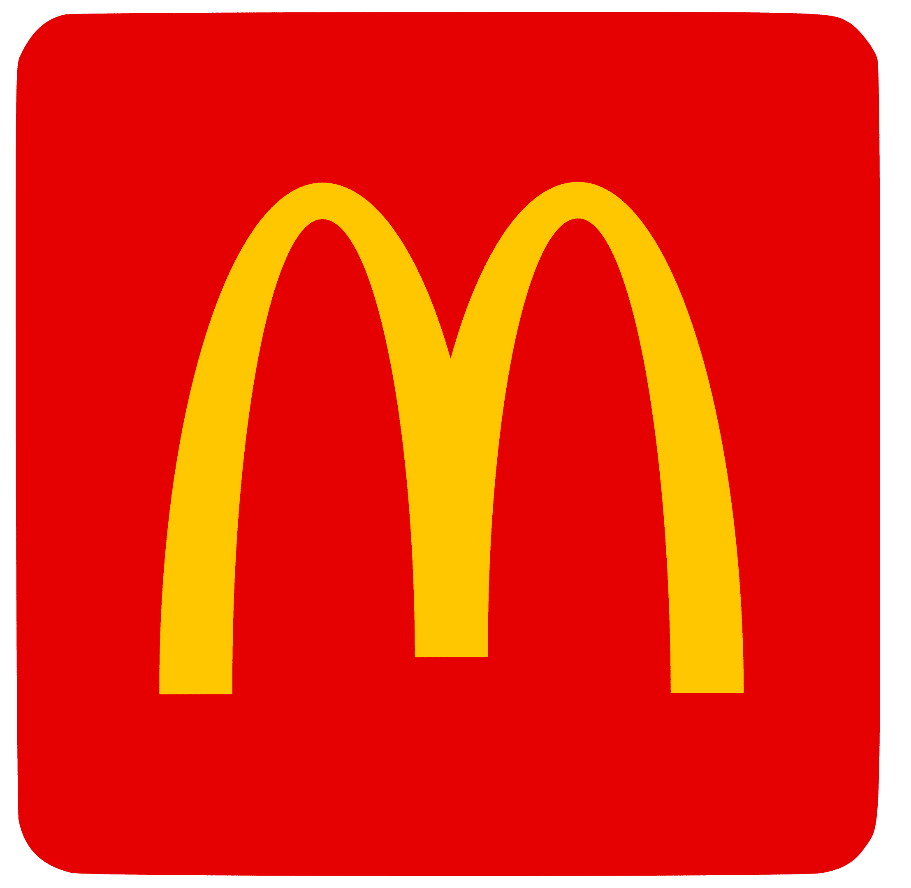
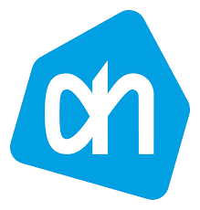
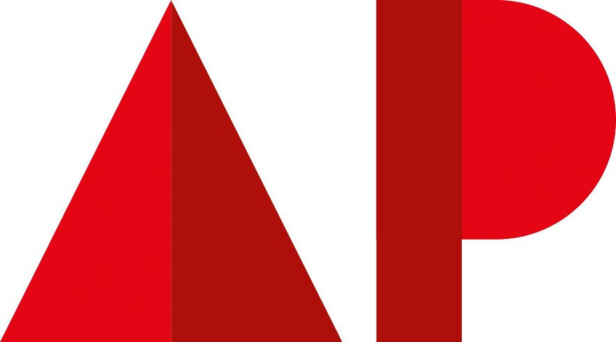
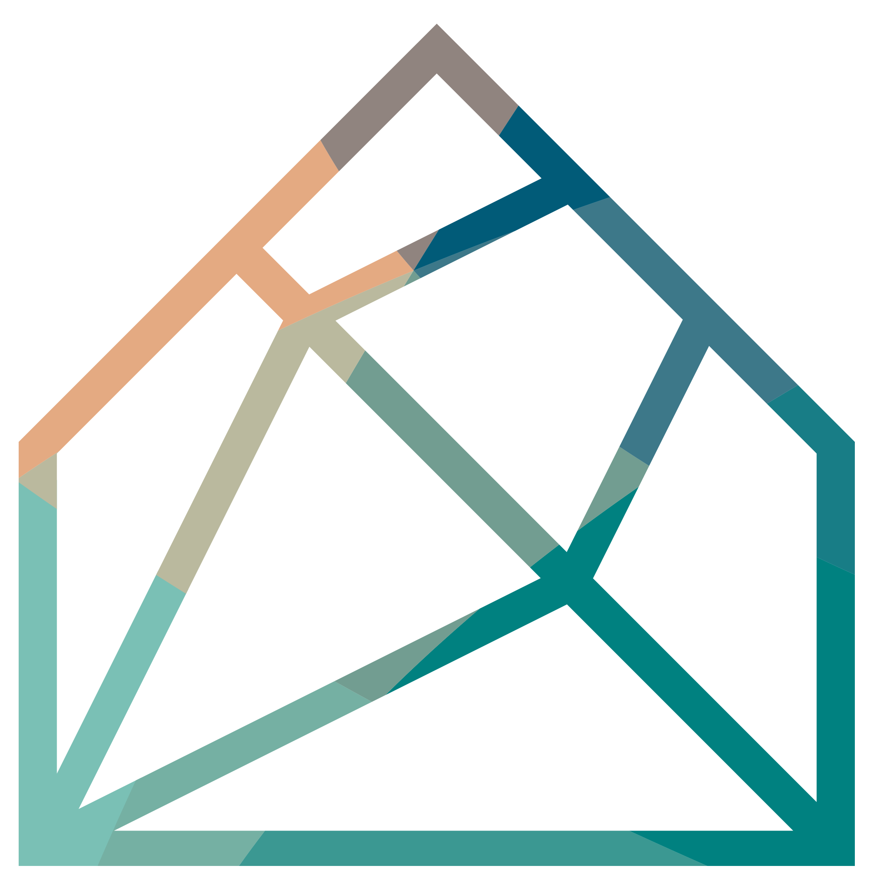

WERKERVARING
Kinepolis Antwerpen
Eventcoördinator
Als eventcoördinator was ik verantwoordelijk voor de organisatie en begeleiding van zowel grote groepsbezoeken als speciale evenementen. Taken omvatten planning, taakverdeling, timingbewaking, briefing van teams, zaalindeling en publieksbeleving. Ik werkte nauw samen met marketing, security, techniek en externe partners om een vlot verloop en optimale bezoekerservaring te garanderen. Krijg meer info
Receptionist
In deze rol was klantvriendelijkheid essentieel: gasten onthalen, telefonie beheren, reservaties behandelen en problemen efficiënt oplossen. Door dagelijks contact met diverse doelgroepen ontwikkelde ik sterke communicatieve en servicegerichte vaardigheden.
Barista (Douwe Egberts)
Als barista verzorgde ik warme en koude dranken volgens de Douwe Egberts-standaard. Hierbij kwamen klantvriendelijkheid, snelheid, hygiëne en oog voor detail samen. Tijdens drukke momenten (avondvoorstellingen & weekends) bleef ik efficiënt werken en behield ik de kwaliteit van service.
Host/Steward
Als host stond ik in voor de begeleiding van bezoekers, ticketcontrole, zaalrouting en veiligheid. Hierbij waren stressbestendigheid, duidelijke communicatie en flexibiliteit noodzakelijk tijdens piekmomenten en drukbezochte avonden.
Winkelbediende
Voor de shop stond ik in voor kassabehandeling, productvoorraad, verkoopadvies en orde in de winkel. Dit leerde me nauwkeurig werken, multitasken en commercieel denken.
McDonald's
Dynamische job waarin snelheid, teamwork en discipline centraal staan. Ik werkte in de crew, combineerde klantgerichtheid met efficiëntie en leerde werken onder tijdsdruk zonder kwaliteitsverlies.
Albert Heijn
Retailervaring met focus op klantenservice, aanvullen van producten, kassawerk en winkelonderhoud. Deze rol ontwikkelde mijn nauwkeurigheid, zelfstandigheid en verantwoordelijkheidsgevoel.
ONDERWIJS
Graduaat Systeem- en Netwerkbeheer | AP Hogschool Antwerpen
Van september 2025 tot juli 2027. Een praktijkgerichte IT-opleiding gericht op serverbeheer, netwerkconfiguratie, virtualisatie en cybersecurity. Veel hands-on labs, groepsopdrachten en professionele cases.
Secundair Economie-Wiskunde | GroenendaalCollege
Van sept 2016 tot juli 2022.Sterke theoretische basis in analytisch denken, probleemoplossing, bedrijfsstructuren en logica. Van economie naar wiskunde naar taalvakken en wetenschapsvakken.